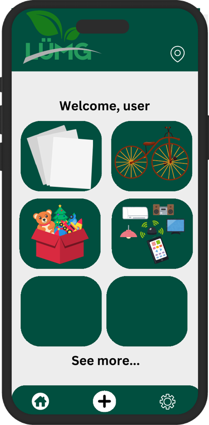
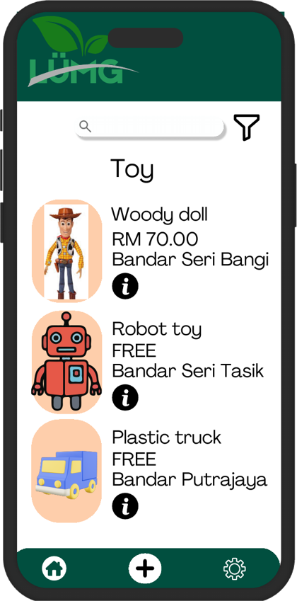
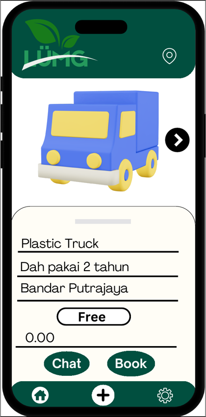
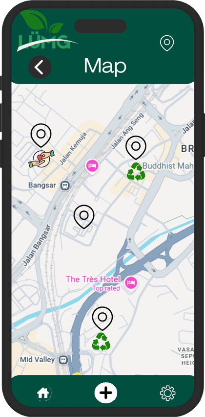
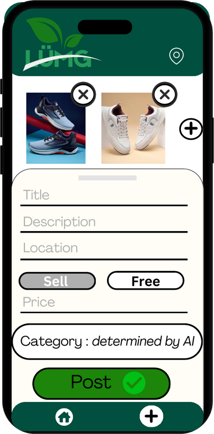
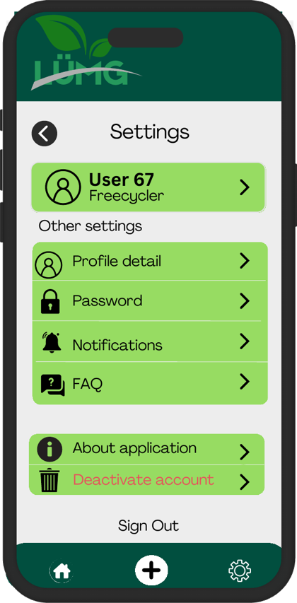

How people move through the app, how it looks, and why every feature exists.
The journey we designed from opening the app to making an impact:
The main user paths above summarise how people browse items, post an item, locate drop-off points and manage their account.
Our design uses a deep forest green with light neutral screens so content stays easy to read, and a fixed bottom bar with three actions: Home, Post and More.






The final interface prioritises quick access to browsing, item posting and drop-off locations. The screen designs below show the intended interface; specific before-and-after design changes should only be described when supported by the project’s saved wireframes or earlier versions.
Tiles for paper, bicycles, toys and electronics lead to a list of nearby items with photos, price (or Free) and area. Helps users find things they need without searching.
Add photos, title, description and location, choose Sell or Free, and let AI set the category. Helps owners pass items on in under a minute.
See the full item, then message the owner or book it. Helps giver and receiver arrange a handover.
Pins show items and recycling points around the user. Solves the “I don't know where to donate” problem.
Manage profile, password, notifications and FAQ. Users earn a “Freecycler” label. Keeps the community trusted and personal.
Every feature exists to answer a part of the problem.
| Problem | User need | App feature | Screen | Expected impact |
|---|---|---|---|---|
| Unknown donation spots | Know where to take items | Map of donation and recycling points | Map | More items reach the right place |
| Usable items go to waste | Pass items on quickly | Post as Free or Sell, browse by category | Post, Home, Item list | Fewer items in landfills |
| Not sure what to do with an item | Fast, correct decision | AI category and recommended action | Post | Appropriate action every time |
| Recipients need time to arrange | Easy handover | Chat and Book | Item details | Quicker, safer exchanges |
| Low awareness of overconsumption | See personal impact | Impact dashboard (planned) | Dashboard | More mindful consumption |